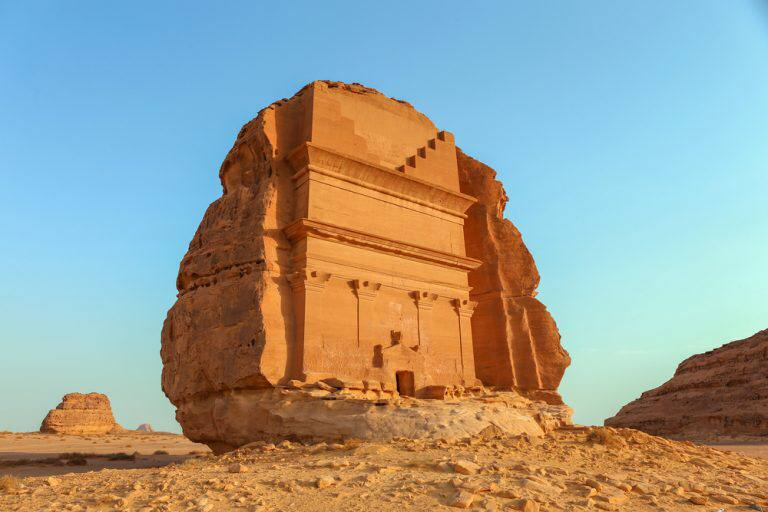

مدائن صالح- السعودية

اذا كانت البتراء الأردنية هي عاصمة الأنباط الأولي . فمدائن
صالح أو مدينة الحجر- كما سميت قديما- هي عاصمتهم
الثانية. تقدر الأثار التي عليها هذه المنطقة ب 153
منحوتة صخرية وبقايا بنايات أخري من قصور ومقابر
شاهدة علي حضارة الأنباط وعظمة معمارهم. مدائن
صالح هي أول المعالم السياحية التي أدرجت في قائمة
التراث العالمي للمملكة.